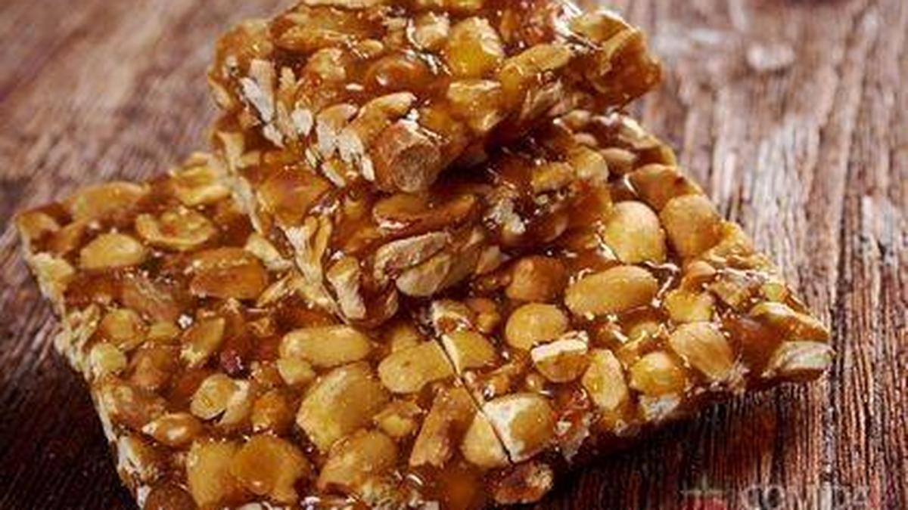

Pé De Moleque
Igredientes
- 1 xícara (chá) de açúcar
- 1 xícara (chá) de amendoim sem pele e torrado
- 1 lata de Leite Condesado(lata ou caixinha) 395g

Modo de Preparo
- Em uma panela, misture o açúcar e o amendoim e leve ao fogo baixo, mexendo sempre até o açúcar caramelizar, sem deixar escurecer.
- Adicione o Leite Condesado em fio e mexa com colher de cabo longo, por cerca de 15 minutos ou até a massa se desprender do fundo da panela.
- Unte uma superfície lisa de mármore ou assadeira com manteiga, despeje a mistura e nivele com a ajuda de uma espátula ou rolo de massa.
- Deixe esfriar e corte em losangos.
- E assim está pronto o seu Pé de Moleque, bom apetite